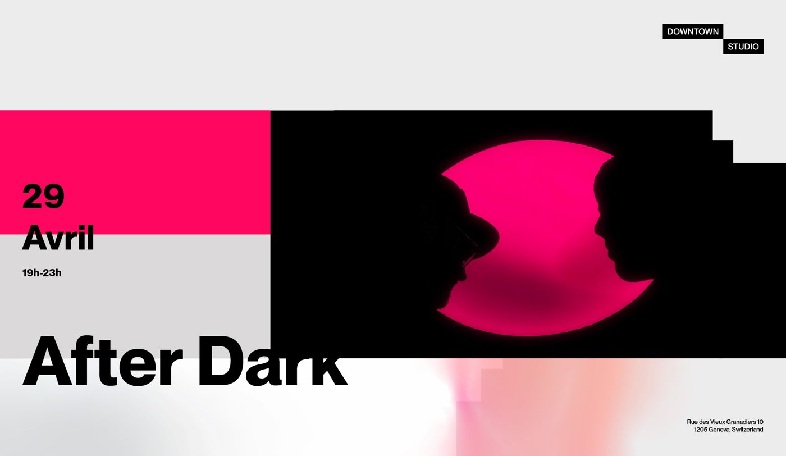

Une session d'écoute au cœur de la ville, avec une sélection de sons mixés sur vinyle. Bar et petite restauration.
Dans la même série

Une session d'écoute au cœur de la ville, avec une sélection de sons mixés sur vinyle. Bar et petite restauration.